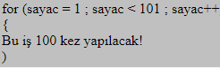
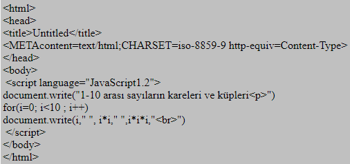
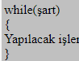
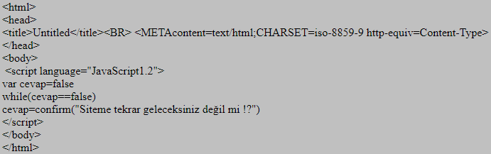
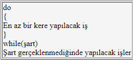
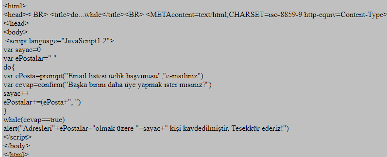
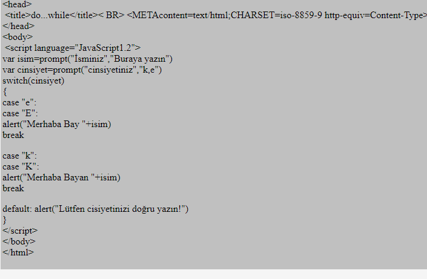

Döngüler, kendilerine verilen koşul gerçeklendiği sürece aynı işi yapmaya devam eden fonksiyonlardır. Bu iş ,örneğin 1'den 100'e kadar saymak olabilir. Bu durumda bir sayaç oluşturulur. Bu sayacın değeri 1'den başlatılır, sayaca 100'e kadar sayması söylenir, ve her adımda sayacın değeri ekrana yazdırılır. Böylece 2 satırda 100 satırlık iş yaptırmış oluruz. JavaScript bize for, while, do...while ve switch döngülerini kullanma imkanı verir.
For döngüsünün yazılışı aşağıdaki gibidir:

Yukarıdaki döngüyle browser'a sayac değişkeninin değerini birer birer(sayac++),1'den(sayac= 1) 100'ekadar(sayac<101) arttırmasını ve her seferinde küme parantezi içinde belirtilen işi yapmasını söyledik. Burada 1 ve 101 yerine istenilen değer gelebilir,ayrıca artış değerini de istediğiniz gibi değiştirebilirsiniz( artışı n yapmak için sayac+=n ifadesini kullanın).Sayac değişkeninin adı da istediğiniz herhangi bir değişken adı olabilir. Yine if ifadesinde olduğu gibi döngüye yapacak tek bir iş verirsek küme parantezi kullanmaya gerek yok.

For' dan farklı olarak while dongüsünde bir şart verilir, while 'da bu şart gerçeklendiği sürece while, kendisine verilen işi yapar.

İşte size biraz ısrarcı bir script!

Bazen karşımıza öyle bir durum çıkar ki, koşullar ne olursa olsun önce bir iş yaptırmamız, sonra bir şart belirtip bu şart gerçeklendiği sürece işin yapılmasını sağlamamız gerekir. Mesela bir mail list'imiz var ve ziyaretçiye bu listeye üye olmak isteyip istemediğini soracağız. Fakat istiyoruz ki bu ziyaretçi arkadaşlarını da listemize kaydettirsin. Bu işin içinden do...while döngüsünün yapısının altındaki örneği yazarak çıkabiliriz...


Bu ifadeler dönguler içinde kullanılırlar.Bir döngü içerisinde break ifadesini kullandığımız noktada döngü koşullar ne olursa olsun sonlanır. Continue ifadesi ise kullanıldığı yerde döngünün o adımının atlanmasını sağlar. Örneğin 0'dan 100'e kadar sayan bir döngüye
şeklinde bir ifade eklersek ekranda 23 hariç, 1'den 100'e kadar olan sayıları görürüz. Continue yerine break yazarsak ise, döngü 23'üncü adımın sonunda kesilir,yani ekranda 1-23 arası sayıları görürüz. Yazdığımız döngüler üzerinde bu ifadeleri deneyerek kullanımlarını daha iyi anlayabilirsiniz.
Switch fonksiyonu diğer döngülerden biraz farklıdır. Switch fonksiyonunda durumlar(case) tanımlarız, ve her durum için yapılacak işi tanımladıktan sonra döngüden break komutuyla çıkarız. Örneğin ziyaretçiden ismini ve cinsiyetini öğrenip ona bay/bayan isim şekllinde hitab etmek istiyorsunuz.Aşağıdaki örneği yazarak bu işi switch komutuyla yapablirsiniz.
